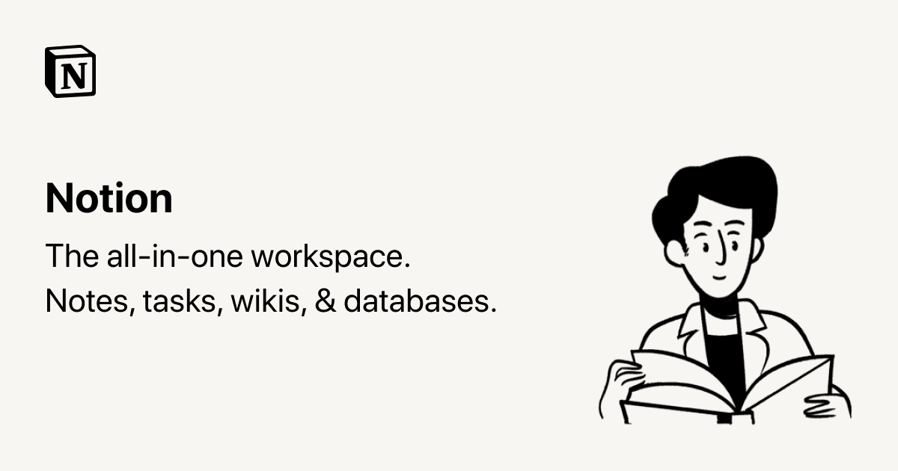

Review of a Digital Tool - Notion's AI Feature
Notion has been a widely used word processing and organizational tool, rising in popularity within the last few years. However, its new AI function has brought some interesting features to the site and its users. Its background has been compared to that of ChatGPT in reviews, and the standout similarity is that neither function has much knowledge about pop culture. Notion AI has also been compared to other AI features developed by companies such as Microsoft. Upon first using Notion’s AI function, the multitude of options is the most intriguing part of the experience. It includes “ask” features to write anything from blog posts, to pros & cons lists, to essays, to press releases. Some customizations include a change in writing tone from casual, to professional, to friendly, or making the writing longer or shorter. This particular type of AI was made to be more customizable in the context of a writing tool. The specific features empowers the writer to take control of other aspects of the writing experience, giving a new meaning to AI’s place in the form of digital writing. In practice, I think this is a tool that should be used multiple times prior to writing in order to yield the best results. For someone who previously knew nothing about working with AI, I had to use it a couple of times to figure out the nature of its writing and to test out the waters so to speak. I needed to figure out what this AI’s version of a casual tone was compared to a professional one, and what it would do if I asked it to make a passage longer. Getting familiar with AI in general is definitely a big step in using this function, primarily because Notion is very “blank slate” based and extremely customizable. In general, the nature of AI is to generate an automatic result, so it is important to be familiar with the tool and have a solid idea of what you want it to generate in order to get the result that you want. Upon testing this out, I found that its idea of a “casual” tone included very colloquial language and used the word “stuff” at least three or four times in about twelve sentences. Overall, I think Notion AI is a decently well developed tool. In no way should it be used as a writing replacement, despite some of its features including writing an essay or blog post. Unfortunately, AI’s knowledge does not extend into the realm of writing English essays, as it mainly gives general information instead of connecting ideas. For example, I asked AI to write an essay on To Kill A Mockingbird by Harper Lee. While it wrote extensively about the plot, characters, and themes, I quickly realized it would be too complicated for it to make connections to other novels, include intricate details or make unique conclusions like most assigned essays ask students to do. Additionally, it ended the essay with the phrase “in conclusion”, which most students learned not to use in academic essays past grade school. The features that I think are worthwhile are the brainstorming and creative story tasks you can ask of the AI. They can be helpful in sparking creative ideas or providing inspiration in the face of writer’s block. An unfortunate downside to this writing tool is its limited accessibility. With Notion’s current policy, they only allow 20 free AI commands before the date of April 5th, 2023. Once these boundaries are reached, the site asks users to pay $10 a month to continue using the AI feature. Coming from a Notion user whose main use for the site is for organizational purposes, I don’t believe it’s worth $10 a month especially considering its limited benefits being creative stimulation and not functionality.